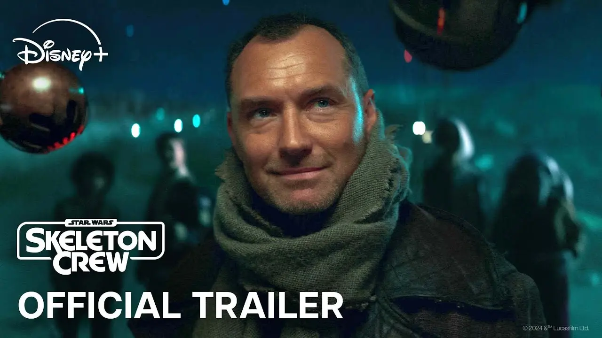

Star Wars: Skeleton Crew

Сегодня – неофициальный праздник вселенной Звёздных Войн. Созвучность на английском даты 4-е мая и “да пребудет с тобой сила” располагает.
В последние годы я всё меньше внимания уделял ЗВ, ведь студия Disney своей ярой капиталистической хваткой забивала гвозди в гроб их нового канона моей любимой вселенной. Подумал, что достойного смогу припомнить за последние годы. На ум приходят только сериалы Skeleton Crew и Андор.
Если Андор – взрослое осмысление вселенной ЗВ, то Skeleton Crew – по-детски наивная (в хорошем смысле) сказка. Не буду переводить Skeleton Crew самовольно, а все переводы, которые я видел, мне не понравились, такую игру слов тяжело передать.
Сюжет построен вокруг группы детей, случайно улетевших на космическом корабле далеко-далеко от дома. В поисках обратного пути они встречают загадочного дроида-пирата SM-33 и харизматичного Джода (Джуда Лоу), который обещает им помочь. По ходу совместного приключения каждый юный герой проявляет себя и учится командной работе, попутно расплетая клубок тайн вокруг их родной планеты и открывая секреты давно павшей Республики. Действие сериала, кстати, происходит после Возвращения Джедая.
Вопросы, которые ставит сюжет зрителям, будут близки именно детской аудитории. Но в этом и изюминка! Оригинальные фильмы Лукаса всегда были про космических волшебников и борьбу чистейшего добра с ужаснейшим злом. Тут же нам дают излюбленную детскую тему космических пиратов! Аргх!
Это не выдающийся сериал, но просто удачный, особенно на фоне иных поделок по ЗВ от Disney. В целом, мне Skeleton Crew понравился. Сериал сбалансированный и приятный в просмотре, могу только порекомендовать.
Remember… The Force will be with you, always